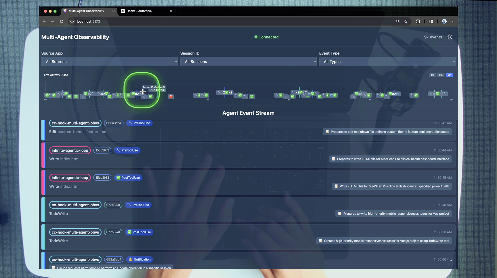
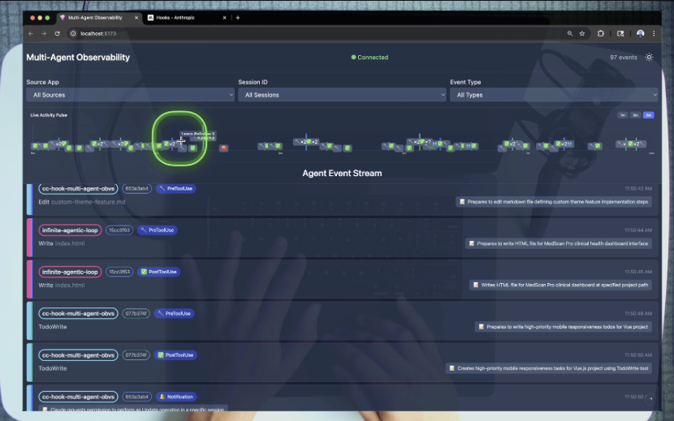
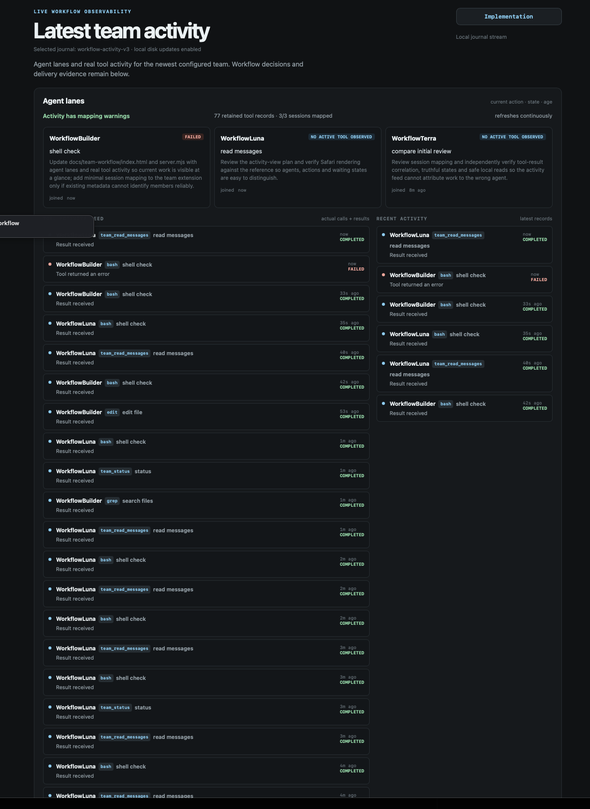
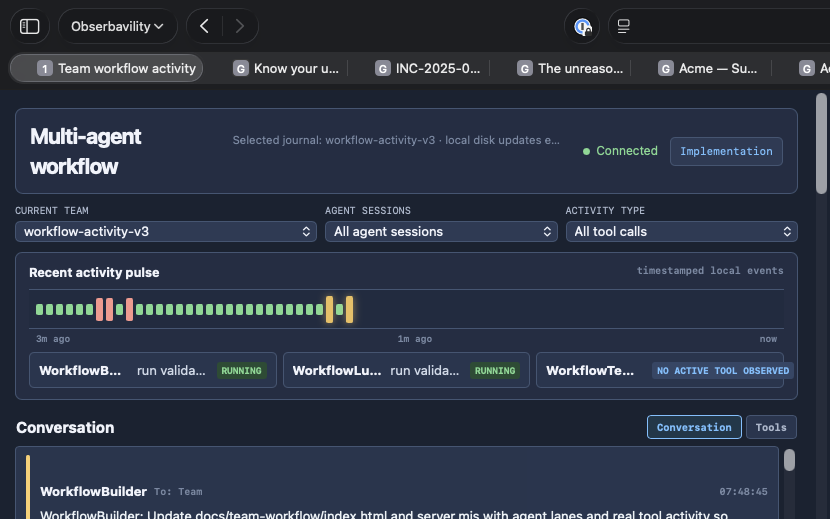
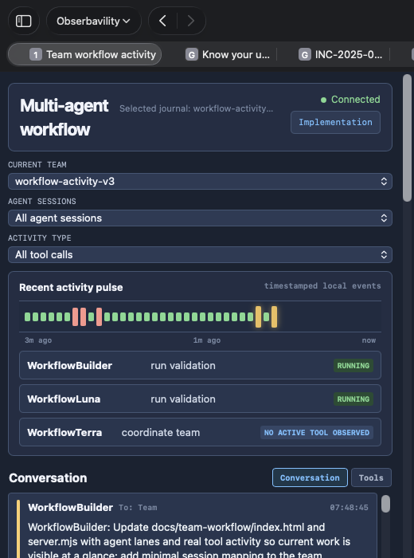

Latest-team activity viewer
Visual and data QA for the activity-first redesign inspired by the supplied multi-agent observability reference. The viewer keeps workflow truth below the activity surface.
1. Reference and mismatch
Reference: reference/claude-observability-app.png shows an activity-first header, lanes/pulse, compact agent tool rows, tool/result badges, timestamps, and expandable detail treatment. The referenced Vue sources are absent, so visual tokens are inferred from the screenshot and existing viewer CSS.
Mismatch addressed: workflow decisions alone made current work hard to see. Conversation is now the primary live view: exact team journal messages retain sender, intended recipients, timestamps, chronological order, and line breaks. Tools remain available behind a separate switch; lanes and the pulse stay above both views.
2. Visual reference

Supplied screenshot; used for activity hierarchy and row treatment.

Requested composition: compact filters, pulse, and one full-width stream.

Oversized hero and agent cards, duplicate activity column, and generic repeated labels.

Safari content capture at the target viewport: compact filters, timestamped pulse, lanes, and Conversation-primary stream.

Separate Safari narrow viewport capture; filters and lanes collapse without horizontal overflow.
3. Data contract evidence
| Check | Result | Evidence label |
|---|---|---|
| Session source | Exact registry sessionFile only | from source |
| Current-team gate | Session text must contain selected team ID | from source |
| Correlation | Assistant toolCall ↔ toolResult by exact toolCallId | from source |
| Age units | ISO/seconds/milliseconds normalize to epoch ms | from source |
| Unmatched call | running only when call and session are within 30s; else unknown | from source |
| No active tool | Mapped session explicitly says no active tool observed | from source |
| Safety | No session paths, raw payloads, shell args, or file contents in JSON | from source |
4. Layout owner and tokens
Layout owner: activity-card, activity-lanes, feed rows, and details rail in index.html. Registry: /Users/dev-machine/.pi/agent/sessions/--Users-dev-machine-dev-turbo-fieldfare-personal--/artifacts/01a0911c-cbe7-73f7-a5d2-6bde960a889a/subagent-registry.json Tail cap: 512 KiB / 160 calls per mapped session; exact team-marker evidence uses bounded 512 KiB head + 512 KiB tail and an mtime/size cache. Inferred tokens: panel #151b1f, rule #2a353b, accent #82d5f5, good #8de0b0, 8–16px row/card gaps, 7–12px radii. Reload: registry and mapped session metadata reload on every snapshot; size/mtime changes emit SSE.
5. Acceptance matrix
| Surface/state | Acceptance | Status | Evidence |
|---|---|---|---|
| Agent lanes | Compact identity, assignment/current action, state, and age stay above the stream | PASS | After desktop · measured |
| Conversation primary | Exact team messages show full text, line breaks, sender, intended recipients or Team, timestamp, and chronological order | PASS | Live journal + desktop/narrow · measured/source |
| Conversation live behavior | Initial render keeps sender/To metadata visible; SSE appends messages, auto-follow occurs only when already pinned, and New messages appears while reading earlier rows | PASS | Source behavior + live SSE check · measured/source |
| Conversation history | Full current-team journal conversation remains available; no arbitrary UI history truncation | PASS | Source + full-journal fixture · source |
| Tools switch | Actual tool calls remain accessible separately without duplicate conversation rows | PASS | Tools tab + API fixture · measured/source |
| Current-team filters | Agent and activity type selects filter current-team lanes/feed; current team remains latest-team status | PASS | Source behavior + Safari controls · source/measured |
| Tool feed | One full-width bounded stream shows tool, meaningful action, outcome, sender, and age | PASS | Fixture + Tools tab · measured/source |
| State truth | Unavailable, no active tool observed, running, failed, and stale unknown are distinct | PASS | Fixture · measured/source |
| Workflow rail | Existing ordered decisions remain below activity surface | PASS | After desktop · measured |
| Evidence | Details disclosures keep verbose evidence accessible and compact | PASS | Source/native details |
| Narrow | Cards/lane grid collapse without horizontal overflow | PASS | After narrow · measured |
| Loading/empty/error | Unavailable and reconnect states remain explicit | PASS | Source · from source |
| Terminal truth | Verifier stage and terminal delivery remain separate; current terminal false stays false | PASS | Live API · measured |
6. Fixture checks
Temporary TEAM_CHAT_DIR + PI_SUBAGENT_REGISTRY only: PASS exact mapping and wrong-name rejection PASS current-team join filtering and ISO timestamp conversion PASS completed and error toolResult correlation by toolCallId PASS recent unmatched call = running; stale unmatched call = unknown PASS malformed session lines and tail-boundary records do not crash PASS 160-record retention cap, bounded marker lookup, and no raw payload/path leakage PASS session append produces SSE update PASS conversation fixture preserves sender, recipients, full multiline text, ordering, and excludes routine Main/context notifications PASS conversation SSE append and new-message indicator behavior PASS full current-team conversation retained without arbitrary history slice PASS real journals and registry were never modified
7. Follow-up review
Review URL: http://127.0.0.1:47831/ Screenshots: activity-after-desktop.png (830×519), activity-after-narrow.png (520×700) Comparable target/before/desktop captures: activity-target.png, visual-qa-before.png, activity-after-desktop.png (each 830×519). Inspect: Conversation tab starts with visible sender/recipient/message metadata, exact multiline text, Tools switch, timestamped pulse labels, lane state labels, filters, workflow rail, terminal false state. Reference source files EventRow.vue, App.vue, LivePulseChart.vue, AgentSwimLaneContainer.vue were not available; screenshot is the visual reference.
All viewer, QA, reference, and screenshot assets are kept under /Users/dev-machine/dev/turbo-fieldfare-personal/docs/team-workflow/.